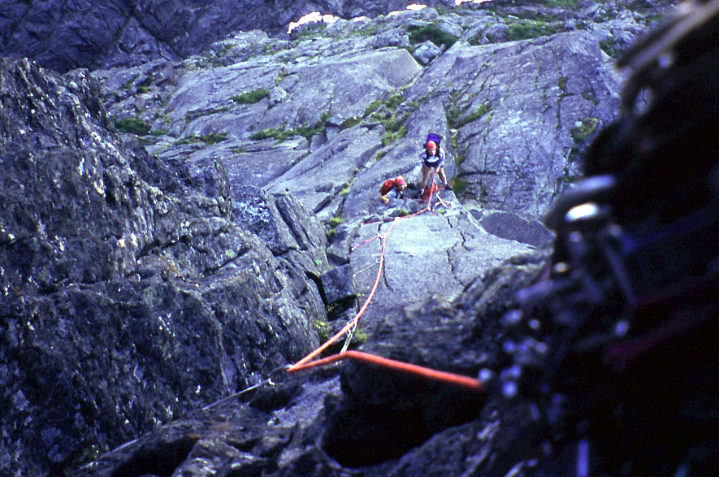
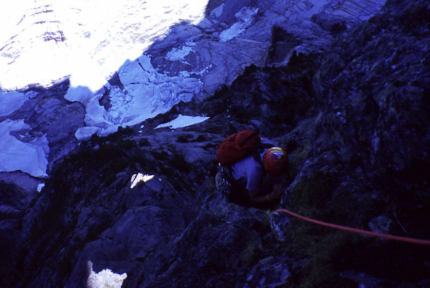
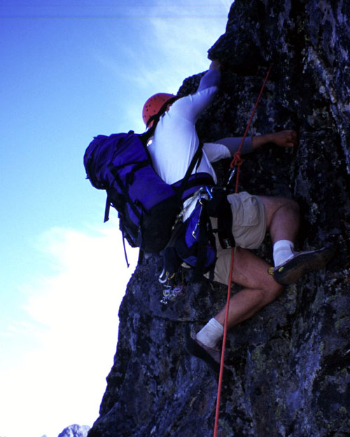
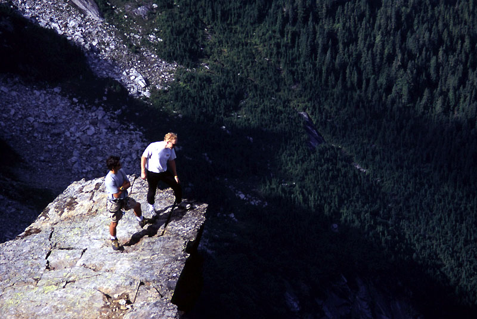
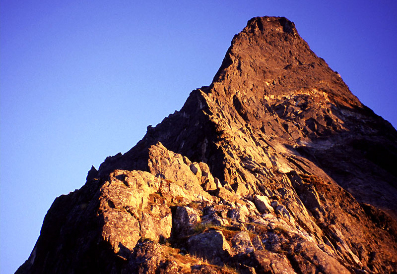
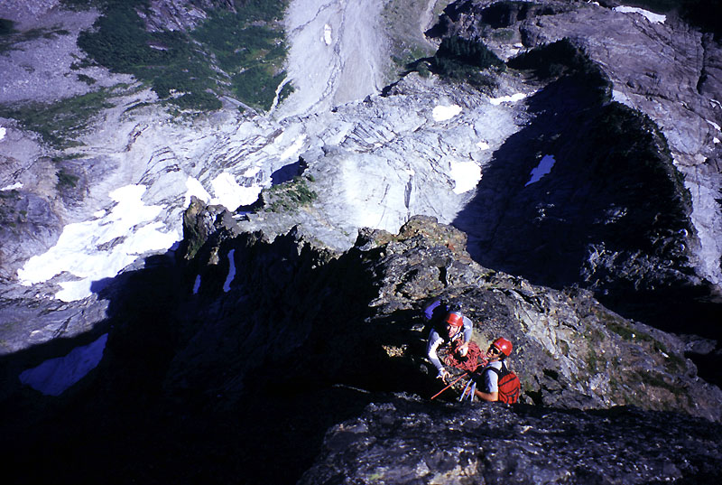
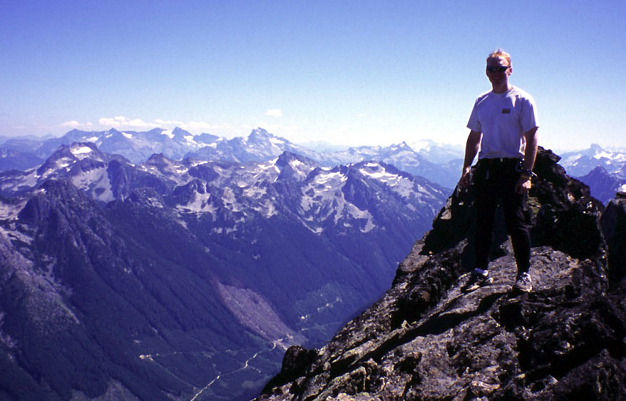

Slesse Mountain, NE Buttress
Northeast Buttress, Grade V, 5.9
August 6-8, 2005
The Northeast Buttress of Slesse Mountain is one of those climbs I read about soon after I got interested in the mountains. It has a great aura of intimidation and boldness. Even as I thought “man, I’d never want to do that!” I was probably hoping for a future when I could consider it as a climb. Happily, years later, I had two friends who really wanted to climb it along with me, and so Theron, Aidan and I found ourselves trundling along the logging roads to the mountain. We left Theron’s car as far as we could drive it up the Sleese Creek road, then drove back and up the Nesackwatch Creek road to a parking area in my car. It was Saturday evening, and we’d timed the ascent for a Sunday/Monday to avoid crowds. The climb is very popular, and we figured that by starting Sunday morning we’d be far behind the slowest of any groups.
Our plan was to climb up to a gorgeous bivy site called Helicopter Ledge Sunday, stay there overnight, and then finish the climb and descent Monday. We brought lightweight sleeping bags and a stove. Aidan and I did especially well, as our Genie packs were pretty tiny once on the climb. Poor Theron had a larger sleeping bag and had to carry the stove pot (a gross injustice on our part!), so his pack seemed significantly larger somehow.
We took kind of a large rack, as we were determined to climb the crest as directly as possible, and didn’t know how soft or hard the rating was for the crux pitch below the bivy site. Some guidebooks said “5.10-“, some “5.9+”, some “5.10”, and they talked about poor protection with “thin wires” needed. So we were ready for bear. Just to have a wildcard, Robert Meshew said “it’s 5.8 at most.” That was encouraging…I guess! Basically we had (at least) doubles of cams from 2 inches to 3 inches. This was silly, and we took to leaving a handful of medium cams behind on each lead. On the harder pitches, we found ourselves placing bomber nuts more than anything else. I only half-jokingly thought we should do this climb in the future armed just with a set of nuts!
We elected to do a variation of the climb that skips the lower 3rd of the buttress proper, instead climbing easy slabs to a ramp higher up. This makes the climb a bit easier, avoiding some brushy climbing lower down. The lower 3rd includes 4-5 more technical pitches, including a 5.10c crux that we would probably aid past. Next time we’ll have to come back and climb that way. For our variation, we simply needed to wait for the Bypass Glacier to slide away so we could walk up polished slabs in tennis shoes. Until this slide occurs, the slopes below the peak are quite dangerous, as there is falling ice every few hours. I read of several parties having “near misses” when ice obliterated their path of a few minutes before. Happily, the glacier slid off dramatically around July 25th this year. I’d happily call it just a snowfield, but having seen photos of the huge crevasses that form I think the stronger term applies well.
I actually brought a tent to sleep in at the trailhead, having heard a story about mice scurrying through the hair of sleepers at this location. Boy, I read too much on the internet don’t I? The other guys reported no problems outside, but it was kind of fun in my tent body, lying there and looking up at the stairs through the mesh ceiling. I caught up on some reading: “Wolves of the Calla.”
In the morning we set off with some pomp, directly the wrong way. Well, we followed a path to a supposed bridge across Nesakwatch Creek, only to find wreckage and the remnants of a road on the other side. Back to the car we trudged, cursing and having bad memories of a wasted day on this same logging road last year. We found a paper plate with the scrawl “Slesse Trail” pinned to a schrub. It pointed up the main road, so we dutifully followed, rewarded after a half mile of uphill walking with a pile of rocks marking a newly cut trail. Now pleased, we followed this down to the river where we could cross easily on a big log. Theron and Aidan put on their MP3 players leaving me and the woods to our own devices. Soon our trail met an old road and we hiked up easily enough, enjoying occasional broad views to the Nesakwatch Spires. It’s funny how inaccessible this area was in the days of the 1956 plane crash. Much as I hate clear cutting, I was glad for a logging road (though now in tatters) to reach the high peaks.
A soaking wet party of four tromped down, saying nothing about their adventure, and soon we were getting wet too from dew-soaked alders hanging over the road. We reached a memorial plinth before a dramatic view of the north and east sides of Slesse Mountain. Theron directed us to cower and mewl for some video comedy he is putting together. Our inspiration was a strikingly miserable female actor in the 1982 movie Excalibur. You could learn a lot about the misery of the middle ages (or the fearful uncertainty of living in a land where the king was without a sword - and the land without a king!) by studying her performance. It’s in the scene where religious zealots nearly drown Percival.
Continuing up the completely overgrown road we all became irrationally fearful of getting wet. First Aidan went for a while, then me, then we all started having reasons to hang back, professing confusion or a sudden interest in some conglomerate rock peeking out from under a root. Logically I knew we’d soon be in the blazing sun and only too dry, but still, a cold shower early in the morning is never fun!
The roadbed ended and we followed a trail to the summit of a wooded knoll. From this point the trail wended through pretty glades and huckleberry bushes. Another 20 minutes of walking uphill brought us to the Propeller Cairn: a pile of wreckage from the plane crash topped by a silver propeller. I saw an extension cord and a rusty metal container as well. It was strange to think that no bodies were recovered from the crash all those years ago, as authorities thought the location too remote to be visited by anyone. We gathered water for the climb from snowmelt streams and soon moved on.
Crossing slabs, we came to a notch and scrambled steeply down the other side to reach the Bypass Glacier slabs, and started up without fanfare. Soon the encircling granite walls loomed on three sides and we made atonal music in the echoing cathedral. Theron and I made minor 3rd intervals and I experimented with deodecophony. Before the walls could erupt in anger, we scurried away up the 3rd class ramp leading to the buttress crest. Very soon, the way becomes a little scary, like you are on a one-way escalator to danger. We scrambled unroped, mostly without incident although Theron missed a trick and committed to a pretty hard move, suddenly wishing for a rope! However we soon gained the crest and kept scrambling for several pitches among small trees and short steep steps of rock. Comforting little steps in dirt hummocks told us we were on route. Finally we were starting to make foot jams in our tennis shoes and reached a good rope up point.
Aidan got the first lead, climbing a runout granite slab and then disappearing into a shrubby buttress where rope drag stopped him cold. I tied on to the rope about 20 feet from the end with a butterfly knot, and Theron on the end. We knew it was a bit unorthodox to climb with three people on one rope, and in fact it was a bit uncomfortable on a crux pitch as I’ll soon relate. Mostly however, it was a good weight-savings technique for a party well-versed in each others ways.
I found Aidan feeling suddenly despirited at his belay. He had hoped to simul-climb for a long distance and felt guilty for not leading a heroic 200 meter pitch. “I told you man, we can’t simul on a 60 meter rope, we gotta ratchet it down to 30 meters on this tight ledgey terrain,” I lectured, delivering several sharp stinging slaps to the face. But seriously, I understood his feeling: there were many pitches to go, and to rev your engine high only to find yourself sitting listlessly at a tree belay 50 meters up is a hard blow.
But now Theron led off, making an entertaining patter of helpful comments like “Whoa, now that’s 5.8!” or “Are you getting footage of me here?” or “Again, here my bodice is outlined against the crest from your vantage point - are you filming me? I can move in slow motion if you like!” Hee hee, just kidding about that last one, Theron’s vigilance at getting video camera footage is to be admired, and he knows it’s up to him to make sure there is any climbing footage at all. Too often our dramatic sense is dulled by heat or laziness, and a movie will consist of a series of static shots on ledges with the actors saying “wow that was a hard pitch. Dude!” Really, it takes a good bit of extra time to get good climbing footage, but we knew we’d love watching a film later so we always complied with Theron’s demands. Though sometimes we were surly.
Theron’s pitch was identifiable on the Beckey topo, going up through a 5.8 crack on the crest. Again Aidan climbed off quickly on a vague pitch. Either something great and terrible happened on that pitch, and I was hypnotized to lock the memory away, or it was completely unmemorable. Theron’s next lead however had a great little arete climb right on the crest near the end. I remember looking down hundreds of feet to a soon-familiar view of snow, slabs and greenery while Theron fumbled with the video camera. “Okay can you re-climb that?”
Aidan took off again, bringing us to a small ledge below the crux pitch. This time I was on the end of the rope so I could stand on a corner of the ledge, gather gear and head out for my first lead. An inviting crack led upward to bulgy roofs of rotten-looking rock. I climbed the crack with a combination of hand and finger jams, placing gear from rest stances. At the roofs, I followed an inviting ledge out left, then realized it placed me below a larger overhang so I gingerly retraced my steps to go straight up. An old piton told me I was on the mark. I clipped it for good luck, but placed a nut nearby too. I don’t know why I bother clipping these old relics, wasting a sling. Perhaps it’s just a nod to the ancients. Enough preamble - into the roof! My feet swung free, and I dipped a hand into my chalk bag as an eagle pierced – okay just kidding. It’s not that hard at all, I just had to get some fingerlocks in a crack between two buttresses and make several intermediate steps up, reaching higher again for a hand jam and a good firm hold. The first roof overcome, I crabbed leftward for a similar but smaller roof. I took pictures of my friends from a good stance. I placed a small nut then went back right and up to get on a featured face, feeling the void below. “If the rock you’re a huggin’, the air must be a-tuggin’” was the phrase Theron invented to describe the feeling. The face climbing was really fun, very similar to Canary pitch 2 at Castle Rock, once the intimidating first move is dealt with. I found a reasonable ledge where I could place a nut, a #3 Camelot and sling a chockstone. I settled in for a long belay, because the guys would have to be careful travelling on the same rope through the hard parts. It was a great feeling to climb such a fun pitch, to be pasted on this wild dark face, to know there would be no going back now. I felt that sense of freedom and strength that eludes me in the valley. If Slesse were a church, that pitch led through great mahogany doors and brought me into the cathedral.
Theron was also having fun, having no trouble with the climbing but loving the sense of exposure. Aidan had it rough though - a year away from rock climbing combined with being on the end of the rope (which required tolerance for large loops of slack, built up because you were unable to stand in one particular area for long) made the pitch a tense and frustrating experience. At our cramped belay I was clove-hitched into the pieces so it made sense for Aidan to lead out, something he didn’t want to do. But I knew he’d feel much better on the lead. He reluctantly took off with storm clouds over his head. Later I complimented him on being willing to get on a Grade V face without climbing one pitch in a year! He brushed it off saying it was a stupid thing to do!
Theron and I stood there, liking the belay ledge and position. Soon Aidan brought us up on mostly straightforward terrain, punctuated by a hard short crack climb at the end. I rated it strenuous 5.8+ or 5.9. It is on the crest next to a nice flat ledge, and required a demanding lieback move, then some frantic pawing among indifferent bumps for a handhold. Theron and I were impressed by the youth, now remembering a hip-hop song and making obscure gang symbols with his fingers. I was belayed out for a steep pitch above amid lyrics about vast numbers of whores and large quantities of the alcoholic beverage “Colt 45.” This pitch was delightful: very steep, requiring liebacking but always with good footholds for rest stances on solid rock. A well-fixed cam made the protection easy, and soon I was clambering up to heather slopes and the large Helicopter Ledge. Belaying behind a solid boulder, I brought the guys up so we could start fighting about sleeping spots. It was now 3:30 pm, and though we probably could have finished the route, we knew we wouldn’t get down from the summit. So if one has to sleep on the mountain…why not here? There was a snowpatch with a trickle of running water. There was the most fantastic view down to the Bypass Glacier Slabs, which mesmerized us for long periods. We had 2 MP3 players. We had a stove and delicious “Chilimack” meals. We could put on our “camp shoes” with socks. Settling in for many hours of sunny, forced inactivity was great fun - how often do we let ourselves do that in the mountains? Not often, I can tell you.
As evening came, I fretted over my bivy system: a 40 degree sleeping bag and a very thin piece of foam (like cardboard). I was wearing all my clothes (a t-shirt and a light sweater), so my pillow had to be my tennis shoes and some quickdraws. I had 30 meters of rope to fashion into a foot pillow, and Aidan did the same. When the stars came out I fell deeply asleep, only waking up at 2:30 am to find one half of my body “asleep.” As I came back to life I got hungry so I consumed my small supply of salami and cheese, sitting up in my bag under the cold light of the moon. I must have presented an eerie sight because Aidan said “Michael…are you alright?” Perhaps the grisly sounds I made as I rended the salami and licked the grease from my fingers, combined with the surreal chasm two feet to my right awakened a primal fear!
Morning came and we naughtily slept past our 5 am wake up time, getting in an extra delicious hour. We weren’t well on our way until 7:30 am, having grown accustomed to the place perhaps. It really was a 5 star hotel.
I led us on 30 meters of rope for 500 feet of ramps and ledges up to a belay spot right on the crest. Then Theron belayed me out for a pitch of 5.7 first on the right side of the crest then back onto the crest. A guidebook describes this as a “troublesome wall,” but it felt really easy. There is some loose rock on the crest, just be careful.
Theron then took a lead to a 5.7 “rotten pillar” and beyond, again landing us at a neat ledge right on the crest. I got to lead the crux pitch of the upper route now, following an entertaining 5.7 corner leading to pleasant blocky flakes. At a headwall an old rusty bolt “protected” moves to the left. I stuffed a #3 Camelot in right beside it. Moving around to the left and then up, a few 5.8 moves got me through a minor overhang, kind of an echo of the overhangs the day before. I placed another good nut and a cam somewhere along the way, and finished the pitch at a small ledge on the face above. My belay anchor was a #2 Camelot and a solid nut, clove-hitched to me via the rope. I think Theron especially loved this pitch, and then he left Aidan and I talking at the belay, heading out on easy face climbing for what proved to be a long and varied pitch. Though we grew chilled at the shaded belay, this 60 meter pitch led into the sun of the crest along cracks and ledges, finally ending with steep moves in a dihedral. We had another stunning belay location on the crest with a slung block, and only two pitches left. Aidan got the next one, going up steep but fun and blocky terrain. Meanwhile, Theron boldly duct-taped his video camera to his helmet, acting on a long-cherished idea. He followed, trying not to whack his head (not entirely successfully), and trying to keep his motions smooth. Sadly, the camera was completely zoomed in, and he realized this on the next pitch. It was funny, despite his efforts to look around slowly, calmly and smoothly, reviewing the footage was like watching a hamster frantically sniffing in all directions. One really got the impression that Theron was hopped up on speed, and though the frantic footage induced seasickness, it was strangely compelling too.
For the last pitch, I followed a short “wavy” 5.8 crack rightward then up to a ledge. I crabbed around a face to the right in order to avoid a chimney, and soon was dragging the rope up blocky easy terrain. Despite terrible rope-drag, I wanted to stand on the summit. Finally I settled for a spot 10 feet away, and marvelled to see Theron and Aidan appear on the summit. We had done it! It was 12:30 pm on a clear, hot day. Flying ants marred the scene somewhat, so we repaired to a different summit that was free of them. Now we could see well to the south and west. Great views of the Picket Range, Mt. Shuksan and Mt. Baker were to be had. We ate the last of our food, hung around a while more, then started down.
We followed instructions for descent from the “Alpine Select” guidebook, and these were great. It was pretty simple (at least in daylight, with good visibility). Scrambling down a ways to a rappel station, we made two rappels to land on a ledge. From here, we scrambled down into a great gully, continuing rightward and down for about 300 feet, until able to traverse out of the gully on steep slabby ground to the right (a cairn marked this point). Some folks might want to rope up for this short pitch, as it was low 5th class for a few moves. We contoured around the peak to the north, reaching another rappel station for a short rappel over a step in a gully. Another station appeared, and one more rappel got us to hiking terrain where we could continue our northward traverse one more time. Now we saw the great gully we’d descend to a scree basin below us. We made one (entirely optional) rappel, then began scrambling down the gully, overcoming a chockstone mid-way. After this we hunkered in a last patch of shade for a few minutes, then hiked easily across the scree basin on a trail that became more defined. This trail led steeply down a scenic ridge, through little hillside gardens, then through brushy scrub trees to a flat saddle with campsites. A short climb up brought us to a knoll and an impressive view down to Sleese Creek. Across the valley, American and Canadian Border Peaks had impressive hanging glaciers and waterfalls. “Ugh,” we thought, beginning the long hot painful descent to Slesse Creek, losing more than 3000 feet in just over a mile! Theron’s knee was painfully sore, we were so glad he brought hiking poles to aid his descent! Finally the trail entered forest and became softer and somewhat less tedious. We reached an old road bed and walked north seemingly for miles in the hot, parched forest. At a dripping moss garden, Theron and I drank greedily, while Aidan responsibly abstained from the risk of drinking untreated water.
At long last we reached the road, and continued down several miles like zombies to where Theron’s car was parked. Refreshed by the air conditioning, we drove back up Nesakwatch Creek Road until a bump in the dirt convinced Theron to play it safe and turn around, first dropping Aidan and I off to continue the 3 mile trudge up to my vehicle. Aidan somehow had the energy to run, so I threw him the key (which we almost lost in the brush) and plodded along slow and steady. After what seemed like years, he came driving down, picked me up and we continued past Theron all the way to Chiliwack, eager to fill the gas tank because it was on empty. Aidan said he nearly fainted or had a seizure or something from lack of water and excessive running. Considering that his hurrying saved me a mile of walking, I didn’t say running was foolish! He also saw that we left the dome light on in the car, which could have been a disaster!
A hearty meal at Taco Bell in Bellingham restored us, then we stayed up late watching all the climbing footage at my house, laughing at Theron’s woeful helmet-cam experiment. Thanks to Kris for letting me go, to the mountain for good weather and lack of stonefall, and especially to Theron and Aidan who made it possible for us to stand up there for a happy hour.
TECHNICAL INFO: First, 500 feet of scrambling up from the glacial slabs to increasingly steep terrain.
- 1 - Aidan leads a 5.7 runout slab of clean granite to a tree belay
- 2 - Theron leads up to a 5.8 crack, then a shorter crack and a belay
- 3 - Aidan leads out, something short and easy?
- 4 - Theron leads off for a fun pitch on the crest with a neat hand crack and rib
- 5 - Aidan leads up to a platform below the crux pitch on the right side of the crest
- 6 - Michael leads the 5.9 crux, first a sustained hand/finger crack, then blocky roofs up to a long face climb and eventually a belay on a small ledge. The belay is a slung block, a #3 Camelot and a nut.
- 7 - Aidan leads indistinct ground up to a 5.8+ hard crack/lieback, then a ledge
- 8 - Michael leads a fun 5.8 corner that reminded us of Vantage. Ends at Helicopter Ledge.
- 9 - The next day, Michael leads 400 feet of 3rd-low 5th terrain to a belay on a nice ledge on the crest.
- 10 - Michael leads a 5.8 pitch just right of and on the crest.
- 11 - Theron leads past a 5.7 "rotten pillar" to a belay again on a nice ledge on the crest.
- 12 - Michael leads a nice crack in big flakes to 5.8 moves traversing left past an old bolt then up through a roof to reach a nice face climb leading to a ledge. The belay is a #2 Camelot and a large nut.
- 13 - Theron leads a long enjoyable pitch of 5.7 up to the crest then along it to a nice ledge on the crest. Belay is a slung block.
- 14 - Aidan leads straight up through an (off route?) 5.8 crack, then on to a ledge.
- 15 - Michael leads a 5.8 wavy crack to easier terrain and the summit.
|
 Starting to climb a small roof |
|
 Aidan climbing a steep pitch |
|
 Theron on an awkward crack |
|
 Looking over the edge of our bivy platform |
|
 Looking ahead to the next day |
|
 Looking down on the last pitch |
|
 Michael on the summit |
{kind=link}
{kind=link}
{kind=link}
{kind=link}
{kind=link}
{kind=link}
{kind=link}